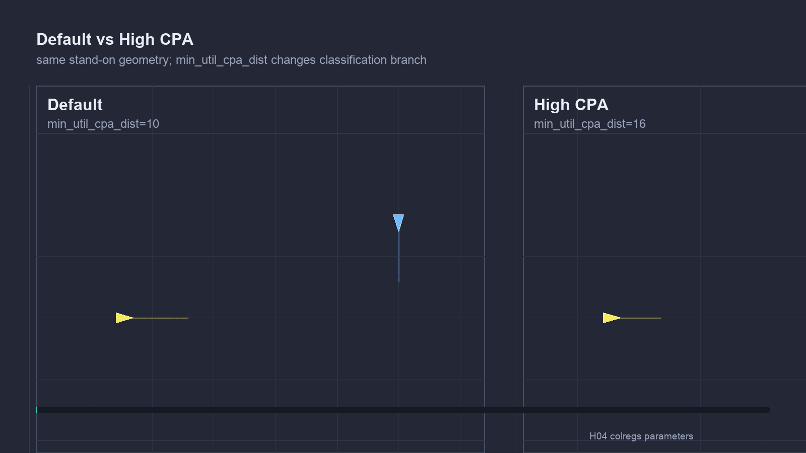
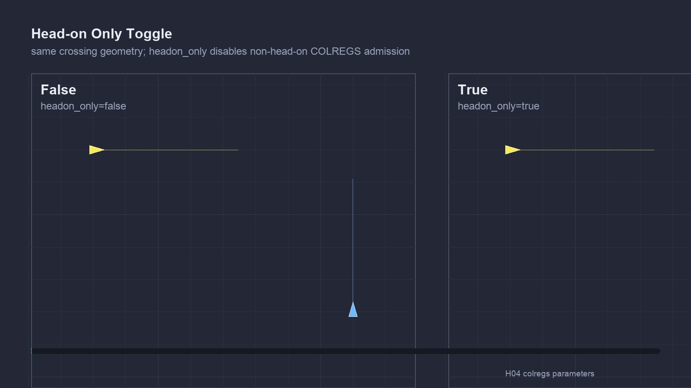

Stem Mission
Baseline scenario context
The shared COLREGS stem mission uses two vessels, ben and abe; ben is the evaluated ownship. Parameter cases keep the encounter setup stable while changing one behavior setting at a time.
COLREGS
Parameter-regression tests for BHV_AvdColregsV22. These cases vary one tuning knob at a time while holding trusted geometry steady, verifying expected stability or one deliberate behavioral change.
Stem Mission
The shared COLREGS stem mission uses two vessels, ben and abe; ben is the evaluated ownship. Parameter cases keep the encounter setup stable while changing one behavior setting at a time.
Examples


Case Matrix
min_util_cpa_low_pass
Covers min util cpa low expected pass.
min_util_cpa_default_pass
Covers min util cpa default expected pass.
min_util_cpa_high_pass
Covers min util cpa high expected pass.
headon_only_true_pass
Covers headon only true expected pass.
headon_only_false_pass
Covers headon only false expected pass.
giveway_bow_dist_default_pass
Covers giveway bow dist default expected pass.
giveway_bow_dist_high_pass
Covers giveway bow dist high expected pass.
max_util_cpa_default_pass
Covers max util cpa default expected pass.
max_util_cpa_high_pass
Covers max util cpa high expected pass.
velocity_filter_off_pass
Covers velocity filter off expected pass.
velocity_filter_on_pass
Covers velocity filter on expected pass.
eval_tol_default_pass
Covers eval tol default expected pass.
eval_tol_short_pass
Covers eval tol short expected pass.
eval_tol_long_pass
Covers eval tol long expected pass.
pwt_outer_dist_default_pass
Covers pwt outer dist default expected pass.
pwt_outer_dist_high_pass
Covers pwt outer dist high expected pass.
pwt_inner_dist_low_pass
Covers pwt inner dist low expected pass.
pwt_inner_dist_default_pass
Covers pwt inner dist default expected pass.
pwt_inner_dist_high_pass
Covers pwt inner dist high expected pass.
pwt_grade_linear_pass
Covers pwt grade linear expected pass.
pwt_grade_quasi_pass
Covers pwt grade quasi expected pass.
pwt_grade_quadratic_pass
Covers pwt grade quadratic expected pass.
pts_port_turns_ok_true_pass
Covers pts port turns ok true expected pass.
pts_port_turns_ok_false_pass
Covers pts port turns ok false expected pass.
turn_radius_default_pass
Covers turn radius default expected pass.
turn_radius_high_pass
Covers turn radius high expected pass.
check_plateaus_false_pass
Covers check plateaus false expected pass.
check_plateaus_true_pass
Covers check plateaus true expected pass.
completed_dist_default_pass
Covers completed dist default expected pass.
completed_dist_high_pass
Covers completed dist high expected pass.
refinery_on_pass
Covers refinery on expected pass.
refinery_off_pass
Covers refinery off expected pass.